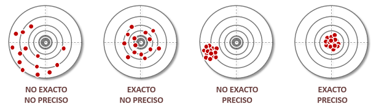

### instalar paquete calidad ###
## desde cran:
install.packages('calidad')
## desde github:
# install.packages('devtools')
# devtools::install_github("inesscc/calidad")
# paquetes ---------------------------------------------------
library(calidad) # ultima version: v0.8.1 sessionInfo()
library(survey) # para crear diseño de muestra
library(dplyr) # procesamiento de datos

Muestreo complejo y calidad estadística
Área de Ciencia de Datos
Unidad de Gobierno de Datos
Julio 2025
Contenidos
Introducción
- ¿Cuál es el problema con el muestreo aleatorio simple?
Muestreo complejo
- Marco muestral de viviendas
- Estratos y conglomerados
- Diseño ENUT
Factores de Expansión
Calidad estadística
- Tipos de errores
- Varianza, error estándar y CV
- Estándares de calidad INE, ONE y CEPAL
Paquete calidad
- Historia, funcionalidades y aplicación
Introducción
¿Cual es el problema con el muestreo aleatorio simple?
El muestreo aleatorio simple (MAS) consiste en seleccionar unidades al azar desde un listado completo de la población.

Pero tiene varios problemas cuando queremos aplicarlo en la práctica:
- Es muy costoso
- No garantiza representación de subgrupos importantes
- Posibilidad de muestras desafortunadas
Muestreo complejo
Para enfrentar las limitaciones del MAS, se usan diseños de muestreo complejo que combinan diferentes estrategias tales como:
- Estratificación
- Conglomeración
- Diseños multietápicos
- Seleccion sistemática, entre otros.
Esto ayuda a reducir costos y obtener muestras representativas de la realidad, garantizando presencia y, en algunos casos, representatividad de subgrupos de interés.
Pero para aplicar cualquiera de estas técnicas, se requiere contar con listados de unidades organizadas según ciertos atributos.
Muestreo complejo | Marco Muestral de Viviendas (1/2)
Un marco muestral maestro es una estructura metodológica diseñada para cubrir completamente el territorio nacional mediante unidades geográficas organizadas, que permite seleccionar muestras probabilísticas.
De acuerdo con las recomendaciones de Naciones Unidas (2009), se concibe como una base común, estable y coherente para múltiples encuestas o rondas repetidas de una misma operación estadística, garantizando trazabilidad y consistencia temporal.
En encuestas de hogares, se utiliza el Marco Muestral de Viviendas (MMV)
Se basa principalmente en el Censo de poblaci√≥n y vivienda, y se va actualizando con datos administrativos e informaci√≥n recolectada en terreno üìù
Tiene una cobertura de las 345 comunas de las 346 que conforman el territorio nacional (se excluye la comuna de la Antártica Chilena perteneciente a la Región de Magallanes).
Muestreo complejo | Marco Muestral de Viviendas (2/2)
El MMV organiza las viviendas por región, provincia, comuna, zonas urbanas y rurales.
Cuenta con una estratificación socioeconómica que se basa en un análisis de diversas variables recopiladas en el Censo 2017 y se realiza a nivel de UPM.
¿C√≥mo seleccionamos muestra? ¿A quienes elegimos? ¿C√≥mo garantizar que se identifiquen todos los subgrupos de inter√©s? ü§î
Muestreo Complejo | Estratos y conglomerados (1/2)
Estratificación:
- División de la población en grupos (estratos) homogéneos mutuamente excluyentes.
- Esto permite garantizar presencia de todos los subgrupos relevantes (como zonas urbanas/rurales, regiones o niveles socioeconómicos).
- Conglomeración:
- Conjunto de unidades heterogéneas principalmente con relación a alguna variable de interés, representativos de toda la población en su conjunto.
- Desde esos grupos se seleccionan algunos con una probabilidad conocida.
- El primer grupo de selección es conocido como UPM MODIFICAR!!!
Muestreo Complejo | Estratos, conglomerados y UPM (2/2)
En el caso del INE, las UPM pueden estar compuestas de muchas formas en relación a las manzanas: agrupaciones de manzanas, cortes de manzanas, mas pequeña que una manzana, etc.
Esta abarca aproximadamente 200 viviendas para las zonas urbanas y 90 para las zonas rurales.
Muestreo complejo | Diseño II ENUT (1/2)
INCOMPLETO
El diseño muestral de ENUT 2023 implica la obtención de una muestra probabilística estratificada y bietápica.
Al interior de cada estrato de muestreo (que corresponde a la comuna), son seleccionadas las unidades de primera etapa (UPM) de forma aleatoria, sistemática y con probabilidad proporcional al tamaño, según el número de viviendas que contienen.
- En la segunda etapa se selecciona la Unidad Secundaria de Muestreo (USM), la cual tiene igual probabilidad de selección al interior de cada UPM (viviendas)
Muestreo complejo | Diseño II ENUT (1/2)
INCOMPLETO
- La población objetivo la constituyen todas las personas de 12 años o más, pertenecientes a 112 comunas del área urbana de todas regiones del país
Factores de expansión (1/3)
¿C√≥mo inferimos desde la muestra a la poblaci√≥n? ü§î
Cada unidad de la muestra se representa a ella misma y a muchas otras de la población objetivo que no fueron seleccionadas.
El factor de expansión indica cuántas unidades representa cada caso en la muestra.
Se calcula como el inverso de la probabilidad de selección:
\[\text{Factor expansión} = 1/\pi_i\]
Factores de expansión (2/3)
- En un diseño estratificado bietápico, la probabilidad de selección se construye como la multiplicación de probabilidades \[\pi_i = \pi_\text{upm}* \pi_\text{vivienda|upm}\]
- Por ejemplo, supongamos que en el estrato ‘A’ hay 1000 UPM y se seleccionan 100: \[\pi_\text{upm} = 100/1000 = 0.1\]
- Supongamos que en cada UPM seleccionada tenemos 200 viviendas, y seleccionamos 60: \[\pi_\text{vivienda|upm}= 30/200 = 0.6\]
- Así, el factor de expansión teórico nos queda como: \[\text{Factor expansión} = 1/(0.1*0.3) = 300 \]
- Cada una de las viviendas seleccionadas dentro de la UPM en ese estrato, representa a 300 viviendas similares de la población
Factores de expansión (3/3)
En la práctica es un poco más complejo, los factores de expansi√≥n no se usan tal como salen del dise√±o üòï
Se realizan diferentes ajustes según las incidencias que se presentan al intentar recolectar la muestra
Los principales ajustes son:
- Ajuste por no respuesta
- Calibración: ajuste de factores para que coincidan con totales conocidos de la población (por edad, sexo, región etc)
- Post-estratificación: se agrupan y ajustan los pesos por combinaciones de variables.
Calidad estadística
Toda estimación obtenida tiene cierto nivel de incertidumbre
La calidad estadística nos ayuda a evaluar que tan confiables son los resultados
Para ello es importante preguntarnos
- ¿Qué tanto varía la estimación si tomáramos otra muestra?
- ¿Qué tan cerca estamos del valor real?
Realizar estas evaluaciones nos permitirán tomar decisión con evidencia y saber si una estimación es fiable.
Calidad estadística | Tipos de errores (1/2)
Buscamos estimaciones que sean precisas e insesgadas

Calidad estadística | Tipos de errores (2/2)
Error de muestreo
- Se produce por el diseño de muestra
- Se puede medir con varianza, error estándar, CV
Errores no muestrales
No dependen del diseño en si, sino de problemas en el proceso:
- Errores de cobertura
- No respuesta
- Error de medición
- Error en ajustes posteriores
Calidad estadística | Varianza, error estándar y CV (2/4)
La varianza, el error estándar y el CV nos ayudan a identificar qué tan buenos son nuestros resultados
Varianza* : Mide cuánto varía una estimación si repitiéramos muchas veces la encuesta con el mismo diseño.
Error estándar (EE): Es la raíz cuadrada de la varianza. Representa el desvío esperado respecto al valor real.
Coeficiente de variación (CV): Mide la precisión relativa. Permite comparar estimaciones de diferente magnitud
\[ \text{CV}(\hat{\theta}) = \frac{ee(\hat{\theta})}{\hat{\theta}}*100 \]
*: La estimación de la varianza en diseños complejos no es trivial ⚠️
Se utilizan diferentes metodologías para estimarla; aproximaciones mediante linealización de Taylor, pesos replicados, métodos del último conglomerado entre otros)
Calidad estadística | Varianza, error estándar y CV (3/4)
¿Estas medidas se adaptan bien a todo tipo de estimaciones?
Caso de estimaciones de proporción entre 0 y 1
Supongamos que realizamos una estimación de proporción para cierta variable:
Si estimamos su complemento, obtendremos que la proporción corresponde a 0.9, cuyos valores de ee y cv son:
¡El mismo dato genera un CV diferente! üòµ
Calidad estadística | Varianza, error estándar y CV (4/4)
Dicotomia de las proporciones

¿Qu√© criterios usamos para decidir si una estimaci√≥n es confiable o de calidad? ü§î
Calidad estadística | Estándares de calidad (1/2)
Las ONE y CEPAL han creado diferentes metodologías y criterios que permiten caracterizar qué tan precisa y confiable es la información que se publica.
En estos estándares, se evalúan distintas componentes de la muestra:
- Tamaño muestral de la estimación, grados de libertad, error estándar, coeficiente de variación, efecto de diseño, entre otros.
En especifico, el INE cuenta con dos estándares de calidad:
Calidad estadística | Estándares de calidad (2/2)
Estándar de encuestas de hogares:
Paquete calidad | Historia
¿C√≥mo podemos implementar los estándares de calidad de forma sencilla y sin morir en el intento? ü§î
Durante 2022 nace el paquete calidad en R, el cual facilita la aplicación de estándares para la evaluación de la calidad para todo tipo de usuarios.
- Permitiendo que en pocas líneas de código se pueda realizar la evaluación de la estimación de interés.
Este paquete, combina los conceptos y criterios de calidad con el paquete survey, desarrollado por Thomas Lumley

Paquete calidad | Funcionalidades (1/2)
Actualmente el paquete cuenta con 4 criterios de evaluación:
Los cuales se aplican de forma independiente con su propio flujo de funciones según los parámetros indicados.
Paquete calidad | Funcionalidades (2/2)
El paquete consta de dos grandes funcionalidades:
Realizar la estimación
- Funciones create_prop(), create_mean(), create_size() y create_total()
Realizar la evaluación de la estimación (función assess())
- Actualmente, están disponibles las metodologías de INE y CEPAL: chile, eclac_2020, eclac_2023 y chile_economics
⚠️ Para poder utilizar el paquete calidad, es necesario definir el diseño de muestra de nuestros datos.
Paquete calidad | Funciones create_*
Las funciones create_…() nos permiten obtener la estimación y generar los insumos necesarios para poder realizar la evaluación.
Los parámetros principales son:
- var : Variable a estimar
- domains: Dominio de interés.
- subpop: Subpoblación de referencia (variable dummy que realiza filtro de los datos).
- design: Diseño de muestra creado con survey
Por defecto nos retorna los insumos: se, df, n y cv.
Adicionalmente, estas funciones nos pueden retornar el deff, ess, log_cv y ci.
Paquete calidad | Función assess
Función assess(): evaluación del estándar
Parámetros principales:
table: Tabla con las estimaciones generadas con funciones create_…().
scheme: String que indica el estándar a evaluar, este puede ser “chile”, “eclac_2020”, “eclac_2023” y “chile_economics”.
publish: Booleano, TRUE evalúa el porcentaje de estimaciones fiables en el tabulado completo. Default FALSE.
ratio_between_0_1: Booleano, TRUE indica que la estimación corresponde a una proporción o razón entre 0 y 1. Por defecto es TRUE y se evalúa solo cuando tenemos una clase proporción (estimación con create_prop).
Paquete calidad | Aplicación (1/7)
Veamos un caso de uso con los datos de la Encuesta Nacional Urbana de Seguridad Ciudadana 2023 (ENUSC) disponibles en el paquete.
Estimaremos y evaluaremos la proporción de hogares victimizados por delitos violentos (VH_DV) a nivel regional
Cargamos el paquete
Paquete calidad | Aplicación (2/7)
Veamos el dataset:
| enc_region | enc_rpc | Fact_Pers_Reg | Fact_Pers_Com | Fact_Hog_Reg | Fact_Hog_Com | VarStrat | Conglomerado | VH_DV | VH_DC | VP_DV | VP_DC | rph_sexo | rph_edad | PAD |
|---|---|---|---|---|---|---|---|---|---|---|---|---|---|---|
| 10 | 10101 | 519.89483 | 425.24526 | 192.60032 | 155.96082 | 20240101 | 2023003913 | 0 | 0 | 0 | 0 | 2 | 5 | 1 |
| 10 | 10202 | 191.97886 | 111.78657 | 55.37923 | 37.84762 | 20240202 | 2023004086 | 0 | 0 | 0 | 0 | 1 | 4 | 0 |
| 6 | 6301 | 184.12335 | 153.05984 | 93.13777 | 89.58831 | 20236301 | 2023002211 | 0 | 0 | 0 | 0 | 2 | 6 | 1 |
| 15 | 15101 | 116.17978 | 131.27119 | 53.39251 | 54.95142 | 20245101 | 2023007491 | 0 | 0 | 0 | 0 | 1 | 7 | 1 |
| 9 | 9101 | 454.33965 | 389.41170 | 170.44871 | 131.89348 | 20239101 | 2023003574 | 1 | 1 | 1 | 1 | 2 | 6 | 1 |
| 16 | 16109 | 49.72242 | 50.42286 | 25.05899 | 23.34552 | 20246109 | 2023007707 | 0 | 1 | 0 | 0 | 1 | 6 | 1 |
Paquete calidad | Aplicación (3/7)
Generamos el diseño de muestra en base a la metodología publicada:
[Paquete] calidad | Aplicación (4/7)]
Realizamos la estimación:
VH_DV <- create_prop('VH_DV', # variable a evaluar
domains = 'enc_region', # dominio de interes
design =dc # diseño
)
VH_DV enc_region stat se df n cv
1 1 0.09360261 0.007809105 244 1546 0.08342828
2 2 0.08094008 0.007757483 219 1547 0.09584229
3 3 0.07485991 0.009585310 152 1013 0.12804331
4 4 0.04186417 0.005450131 309 1958 0.13018605
5 5 0.07832234 0.005048450 878 5601 0.06445735
6 6 0.05527160 0.005561834 425 2999 0.10062733
7 7 0.04421951 0.003921486 536 4219 0.08868226
8 8 0.07372329 0.004711330 630 4693 0.06390559
9 9 0.05037750 0.005321989 424 2603 0.10564218
10 10 0.04792482 0.005719360 316 2118 0.11934026
11 11 0.03348320 0.005472555 95 973 0.16344182
12 12 0.02817208 0.005309555 136 1412 0.18846873
13 13 0.10309919 0.003051272 2607 14140 0.02959550
14 14 0.06417123 0.008098127 215 1584 0.12619561
15 15 0.09738246 0.008623445 209 1237 0.08855235
16 16 0.05274678 0.005708177 258 2170 0.10821849Paquete calidad | Aplicación (5/7)
Evaluamos la calidad de la estimación:
assess(VH_DV, # estimacion con funcion create
scheme = 'chile', # indicamos criterio, chile := estandar de encuestas de hogares
ratio_between_0_1 = TRUE) # estimacion corresponde a una proporcion enc_region stat se df n cv eval_n eval_df prop_est quadratic
1 1 0.09360261 0.007809105 244 1546 0.08342828 sufficient sample size sufficient df <= 0.5 0.02290601
2 2 0.08094008 0.007757483 219 1547 0.09584229 sufficient sample size sufficient df <= 0.5 0.02079058
3 3 0.07485991 0.009585310 152 1013 0.12804331 sufficient sample size sufficient df <= 0.5 0.01973590
4 4 0.04186417 0.005450131 309 1958 0.13018605 sufficient sample size sufficient df <= 0.5 0.01339633
5 5 0.07832234 0.005048450 878 5601 0.06445735 sufficient sample size sufficient df <= 0.5 0.02033986
6 6 0.05527160 0.005561834 425 2999 0.10062733 sufficient sample size sufficient df <= 0.5 0.01612225
7 7 0.04421951 0.003921486 536 4219 0.08868226 sufficient sample size sufficient df <= 0.5 0.01389420
8 8 0.07372329 0.004711330 630 4693 0.06390559 sufficient sample size sufficient df <= 0.5 0.01953562
9 9 0.05037750 0.005321989 424 2603 0.10564218 sufficient sample size sufficient df <= 0.5 0.01515591
10 10 0.04792482 0.005719360 316 2118 0.11934026 sufficient sample size sufficient df <= 0.5 0.01465990
11 11 0.03348320 0.005472555 95 973 0.16344182 sufficient sample size sufficient df <= 0.5 0.01154274
12 12 0.02817208 0.005309555 136 1412 0.18846873 sufficient sample size sufficient df <= 0.5 0.01028735
13 13 0.10309919 0.003051272 2607 14140 0.02959550 sufficient sample size sufficient df <= 0.5 0.02443024
14 14 0.06417123 0.008098127 215 1584 0.12619561 sufficient sample size sufficient df <= 0.5 0.01780947
15 15 0.09738246 0.008623445 209 1237 0.08855235 sufficient sample size sufficient df <= 0.5 0.02351859
16 16 0.05274678 0.005708177 258 2170 0.10821849 sufficient sample size sufficient df <= 0.5 0.01562745
eval_se label
1 admissible SE reliable
2 admissible SE reliable
3 admissible SE reliable
4 admissible SE reliable
5 admissible SE reliable
6 admissible SE reliable
7 admissible SE reliable
8 admissible SE reliable
9 admissible SE reliable
10 admissible SE reliable
11 admissible SE reliable
12 admissible SE reliable
13 admissible SE reliable
14 admissible SE reliable
15 admissible SE reliable
16 admissible SE reliablePaquete calidad | Aplicación (6/7)
¿Cuando se publica una estimaci√≥n? ü§î
Se debe cumplir que al menos el 50% del tabulado sea confiable, para ello tenemos el parámetro publish el cual nos ayuda con ese calculo:
enc_region stat se df n cv eval_n eval_df prop_est quadratic
1 1 0.09360261 0.007809105 244 1546 0.08342828 sufficient sample size sufficient df <= 0.5 0.02290601
2 2 0.08094008 0.007757483 219 1547 0.09584229 sufficient sample size sufficient df <= 0.5 0.02079058
3 3 0.07485991 0.009585310 152 1013 0.12804331 sufficient sample size sufficient df <= 0.5 0.01973590
4 4 0.04186417 0.005450131 309 1958 0.13018605 sufficient sample size sufficient df <= 0.5 0.01339633
5 5 0.07832234 0.005048450 878 5601 0.06445735 sufficient sample size sufficient df <= 0.5 0.02033986
6 6 0.05527160 0.005561834 425 2999 0.10062733 sufficient sample size sufficient df <= 0.5 0.01612225
7 7 0.04421951 0.003921486 536 4219 0.08868226 sufficient sample size sufficient df <= 0.5 0.01389420
8 8 0.07372329 0.004711330 630 4693 0.06390559 sufficient sample size sufficient df <= 0.5 0.01953562
9 9 0.05037750 0.005321989 424 2603 0.10564218 sufficient sample size sufficient df <= 0.5 0.01515591
10 10 0.04792482 0.005719360 316 2118 0.11934026 sufficient sample size sufficient df <= 0.5 0.01465990
11 11 0.03348320 0.005472555 95 973 0.16344182 sufficient sample size sufficient df <= 0.5 0.01154274
12 12 0.02817208 0.005309555 136 1412 0.18846873 sufficient sample size sufficient df <= 0.5 0.01028735
13 13 0.10309919 0.003051272 2607 14140 0.02959550 sufficient sample size sufficient df <= 0.5 0.02443024
14 14 0.06417123 0.008098127 215 1584 0.12619561 sufficient sample size sufficient df <= 0.5 0.01780947
15 15 0.09738246 0.008623445 209 1237 0.08855235 sufficient sample size sufficient df <= 0.5 0.02351859
16 16 0.05274678 0.005708177 258 2170 0.10821849 sufficient sample size sufficient df <= 0.5 0.01562745
eval_se label publication pass
1 admissible SE reliable publish 100% reliable estimates
2 admissible SE reliable publish 100% reliable estimates
3 admissible SE reliable publish 100% reliable estimates
4 admissible SE reliable publish 100% reliable estimates
5 admissible SE reliable publish 100% reliable estimates
6 admissible SE reliable publish 100% reliable estimates
7 admissible SE reliable publish 100% reliable estimates
8 admissible SE reliable publish 100% reliable estimates
9 admissible SE reliable publish 100% reliable estimates
10 admissible SE reliable publish 100% reliable estimates
11 admissible SE reliable publish 100% reliable estimates
12 admissible SE reliable publish 100% reliable estimates
13 admissible SE reliable publish 100% reliable estimates
14 admissible SE reliable publish 100% reliable estimates
15 admissible SE reliable publish 100% reliable estimates
16 admissible SE reliable publish 100% reliable estimatesPaquete calidad | Aplicación (7/7)
¿Es posible aplicar otros estándares? ü§î
Parcialmente si, el paquete posee 4 criterios implementados a los cuales se les puede modificar los parámetros definidos.
Supongamos que queremos ser muy estrictos y consideraremos confiables solo las estimaciones de tamaño desde 1000:
## parametros INE hogares default_params_ine = list(df = 9, n = 60, cv_lower_ine = 0.15, cv_upper_ine = 0.3 ) ## evaluacion assess(VH_DV, scheme = 'chile', ratio_between_0_1 = TRUE, publish = TRUE, n = 1000) ## agregamos nuevo tamañoenc_region stat se df n cv eval_n eval_df prop_est quadratic 1 1 0.09360261 0.007809105 244 1546 0.08342828 sufficient sample size sufficient df <= 0.5 0.02290601 2 2 0.08094008 0.007757483 219 1547 0.09584229 sufficient sample size sufficient df <= 0.5 0.02079058 3 3 0.07485991 0.009585310 152 1013 0.12804331 sufficient sample size sufficient df <= 0.5 0.01973590 4 4 0.04186417 0.005450131 309 1958 0.13018605 sufficient sample size sufficient df <= 0.5 0.01339633 5 5 0.07832234 0.005048450 878 5601 0.06445735 sufficient sample size sufficient df <= 0.5 0.02033986 6 6 0.05527160 0.005561834 425 2999 0.10062733 sufficient sample size sufficient df <= 0.5 0.01612225 7 7 0.04421951 0.003921486 536 4219 0.08868226 sufficient sample size sufficient df <= 0.5 0.01389420 8 8 0.07372329 0.004711330 630 4693 0.06390559 sufficient sample size sufficient df <= 0.5 0.01953562 9 9 0.05037750 0.005321989 424 2603 0.10564218 sufficient sample size sufficient df <= 0.5 0.01515591 10 10 0.04792482 0.005719360 316 2118 0.11934026 sufficient sample size sufficient df <= 0.5 0.01465990 11 11 0.03348320 0.005472555 95 973 0.16344182 insufficient sample size sufficient df <= 0.5 0.01154274 12 12 0.02817208 0.005309555 136 1412 0.18846873 sufficient sample size sufficient df <= 0.5 0.01028735 13 13 0.10309919 0.003051272 2607 14140 0.02959550 sufficient sample size sufficient df <= 0.5 0.02443024 14 14 0.06417123 0.008098127 215 1584 0.12619561 sufficient sample size sufficient df <= 0.5 0.01780947 15 15 0.09738246 0.008623445 209 1237 0.08855235 sufficient sample size sufficient df <= 0.5 0.02351859 16 16 0.05274678 0.005708177 258 2170 0.10821849 sufficient sample size sufficient df <= 0.5 0.01562745 eval_se label publication pass 1 admissible SE reliable publish 93.75% reliable estimates 2 admissible SE reliable publish 93.75% reliable estimates 3 admissible SE reliable publish 93.75% reliable estimates 4 admissible SE reliable publish 93.75% reliable estimates 5 admissible SE reliable publish 93.75% reliable estimates 6 admissible SE reliable publish 93.75% reliable estimates 7 admissible SE reliable publish 93.75% reliable estimates 8 admissible SE reliable publish 93.75% reliable estimates 9 admissible SE reliable publish 93.75% reliable estimates 10 admissible SE reliable publish 93.75% reliable estimates 11 admissible SE non-reliable publish 93.75% reliable estimates 12 admissible SE reliable publish 93.75% reliable estimates 13 admissible SE reliable publish 93.75% reliable estimates 14 admissible SE reliable publish 93.75% reliable estimates 15 admissible SE reliable publish 93.75% reliable estimates 16 admissible SE reliable publish 93.75% reliable estimates
Para finalizar
¡Muchas gracias!

Muestreo complejo y calidad estadística
Área de Ciencia de Datos
Unidad de Gobierno de Datos
Julio 2025